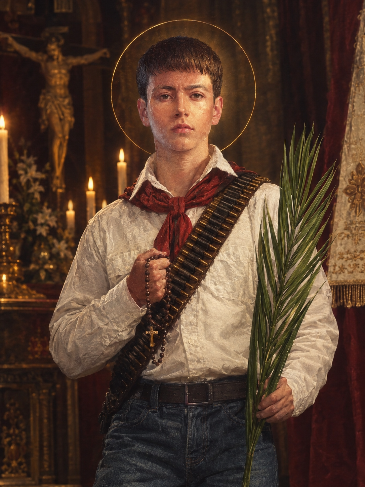

FÉ • CORAGEM • SANTIDADE
O legado de São José Sánchez del Río
Mesmo após sua morte, o testemunho de Joselito continua inspirando jovens e fiéis a viverem sua fé com coragem.

Inspiração para os jovens
São José Sánchez del Río é lembrado como exemplo de coragem e fidelidade a Cristo. Sua história inspira especialmente adolescentes, coroinhas e jovens católicos.
Embora não possua um título universal oficial de padroeiro, é venerado como exemplo e intercessor para a juventude.
Beatificação
Em 20 de novembro, José foi beatificado em Guadalajara, no México.
Canonização
Em 16 de outubro, foi canonizado pelo Papa Francisco, na Praça de São Pedro.
SINAL DE INTERCESSÃO
O milagre da canonização
O milagre atribuído à intercessão de São José Sánchez del Río envolveu uma bebê mexicana chamada Ximena Guadalupe Magallón Gálvez, que enfrentava uma grave condição de saúde, com tuberculose pulmonar, convulsões e complicações cerebrais. Diante da pouca esperança de recuperação, sua família começou a pedir a intercessão de Joselito, unindo-se em orações pela cura da menina.
Surpreendentemente, Ximena apresentou uma recuperação considerada inexplicável pelos especialistas que analisaram o caso. Após uma investigação médica e teológica, a Igreja Católica reconheceu oficialmente o milagre em 21 de janeiro de 2016, por autorização do Papa Francisco. Esse reconhecimento abriu caminho para a canonização de Joselito, celebrada em 16 de outubro de 2016, no Vaticano.